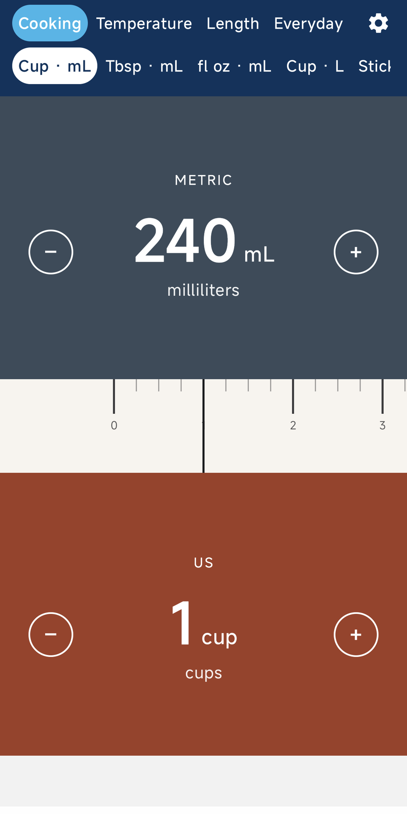
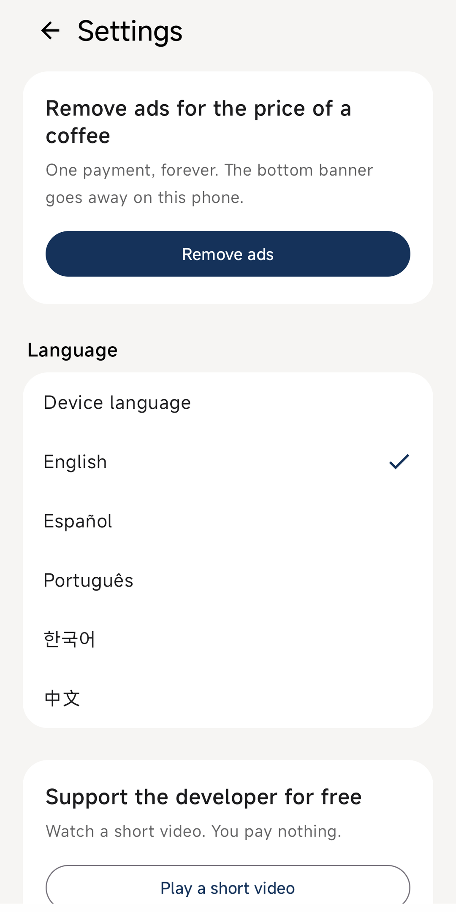

Apps / UnitSlide
Unit converter for AndroidUnitSlide
Slide a ruler to convert cups, oven temperature, tape-measure inches, and miles. No typing. Now on Google Play.
Get it on Google PlayScreenshots



The app
UnitSlide converts US and metric units on the phone. The top half is blue-gray for metric. The bottom half is clay red for US units. Drag the ruler in the middle and both numbers move together. Minus and plus step to an exact value. There is no keypad, no account, and no UnitSlide server.
Cooking
Cups, tablespoons, and fluid ounces to milliliters and liters. Butter is exact: 1 stick = 113 g.
Temperature
Fahrenheit and Celsius, for the oven or the weather.
Length
Inches and feet to centimeters and meters. Inches show the nearest US tape fraction, such as 1/4, 3/8, or 1/16.
Everyday
Pounds and kilograms, miles and kilometers, gallons and liters.
Offline
Every conversion works without a connection. The app speaks English, Spanish, Portuguese, Korean, and Chinese. Pick a language in Settings, or follow the phone.
Ads
A banner sits at the bottom until you buy ad removal, a one-time purchase on that phone. An optional short video can support the developer. You do not have to play it.
Free on Google Play, with ads and a one-time in-app purchase. Not directed at children under 13. Google Play · Privacy policy